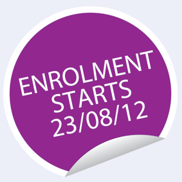
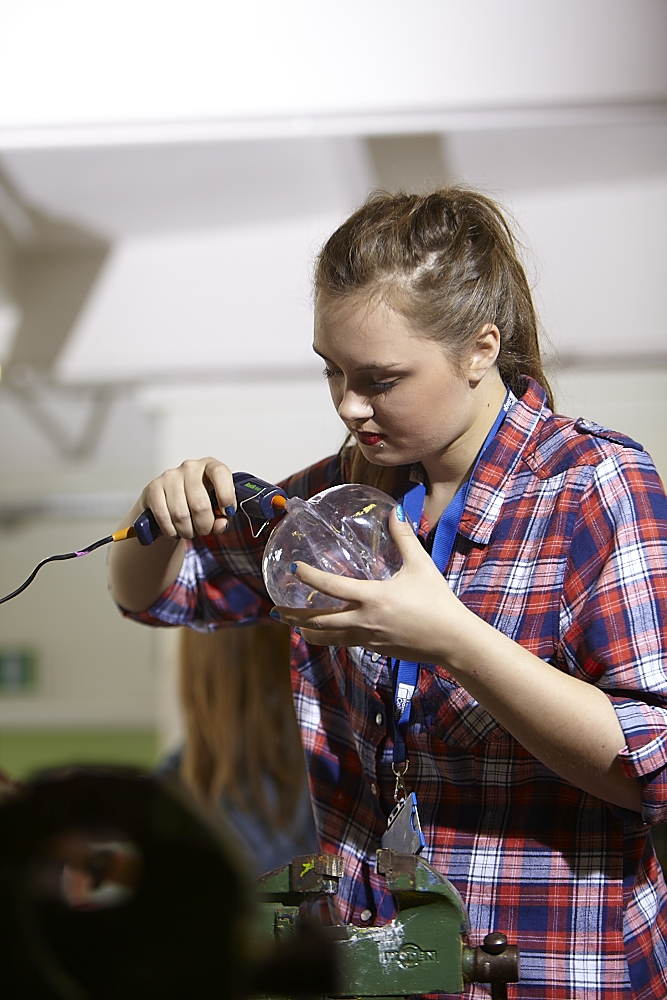

Under 19s at THC
We offer a vast range of courses from BTECs and A Levels to short courses for 16-19 year olds at our sixth form centre along with excellent support and superb facilities enabling you to progress on to higher education or into employment.
Courses for 14-16 Year Olds
14–16 Vocational Learning Programme
We offer a range of courses that are open to under 16s. If you think your son or daughter may benefit from this programme you should discuss it with an appropriate person from your child’s school. The Vocational Learning Programme includes courses held at Tower Hamlets 6th Form College for year 10 and 11 pupils, courses delivered in school supported or delivered by College staff and full-time placements for under 16s. We offer courses in a wide range of subject areas at different levels. Courses are funded by the schools or by special project funding when this is available. If you think your son or daughter may benefit from this programme you should discuss it with an appropriate person from your child’s school.
14-16 Year 10 and 11 Programme – School Link
This programme is designed for Key Stage 4 pupils at school who would benefit from working in a college environment as part of their timetable. Many pupils enjoy working in a more adult environment and benefit from the opportunity to try vocational subjects and use college facilities.
We work with local schools to offer a programme which responds to the needs of students, who may later enrol at the College. We make every effort to respond to particular course requests and revise the programme each year. Some students work in school-based groups, others in mixed groups. Many students take a two year course over years 10 and 11, (usually half a day a week in year 10 and one day a week in year 11), but one-year courses can be arranged. All new students are interviewed by our College Link Tutor.
Under 16 Full-Time placements
The College can enrol a small number of Year 11 students on our existing full-time Introductory and Level 1 courses, and support them in the same way as our other full-time students. At an initial interview an agreement is reached between the student and all parties concerned as to the suitability of the course and college environment for the individual. Full-time under 16 placements are usually funded by the school attended by the student. Many students are able to make a fresh start and develop more vocational skills through these courses.